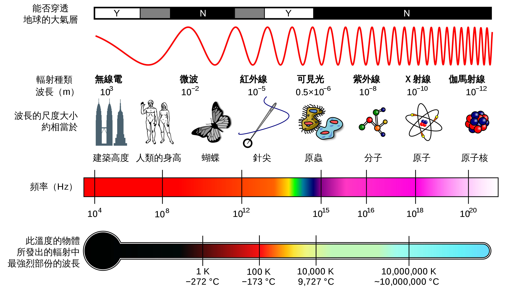
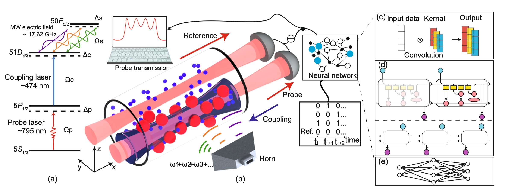
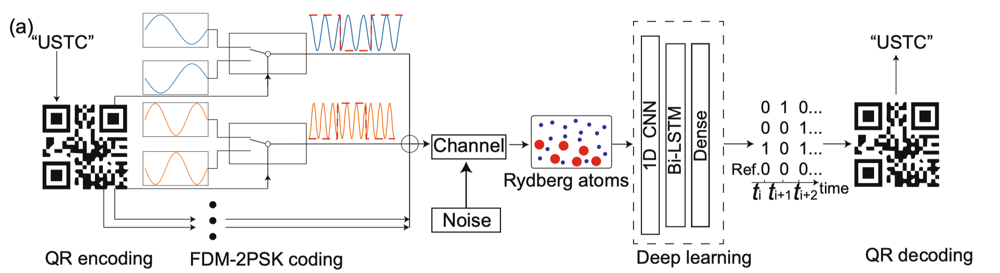

微波探测中的里德堡原子
微波探测是一种重要的探测手段。本文将介绍微波探测的基本原理，以及里德堡原子在微波探测中的应用。
微波探测
常见探测技术对比
通常都是以电磁波作为载体，通过发射/接受电磁波过程并辅以数据处理来获得对目标物的信息。
- 光学成像和探测：
- 优势：光学成像提供高分辨率和颜色信息，广泛应用于医学诊断、工业检测和科学研究。
- 劣势：光学成像受到材料的透明度和光线条件的限制，可能无法穿透某些材料或在低光条件下工作。
- X射线成像和探测：
- 优势：X射线能穿透许多材料，用于内部结构的成像，如医学放射成像和工业无损检测。
- 劣势：X射线具有辐射风险，长时间或高剂量的暴露可能对生物组织有害。
- 超声波成像和探测：
- 优势：超声波成像无辐射、成本低、设备便携，常用于医学诊断和工业检测。
- 劣势：其分辨率和成像深度可能不如其他技术，且对操作技巧和材料的声学特性有一定要求。
- 红外成像和探测：
- 优势：红外成像能够在无光或低光条件下工作，用于热成像和夜视技术。
- 劣势：分辨率和穿透能力可能不如微波和X射线技术。
- 磁共振成像（MRI）：
- 优势：MRI能提供软组织的高分辨率图像，无辐射风险，广泛应用于医学诊断。
- 劣势：成本高、设备体积大，且对患者有一些限制（如金属植入物）。
- 微波探测：
- 优势：微波探测具有一定的穿透能力，能在多种环境条件下工作，设备通常较为便携，成本相对较低。微波探测也能在无光或低光条件下工作，如雷达和微波运动探测器。
- 劣势：微波成像的分辨率通常低于光学和X射线成像，且可能受到其他电子设备和电磁干扰的影响。

核心步骤
微波探测技术通常通过发射微波信号并分析这些信号与目标物体的交互来检测目标物体的某些性质，最直观的理解即为拍摄一张 2D 或者 3D 的照片，但不是利用可见光而是微波。完整的一套探测流程通常包含以下步骤：
- 微波发射： 微波探测系统通常包括一个微波发射器，它能够发射微波频率范围内的电磁波。这些微波会传播到空间中，并可能与目标物体相互作用。
- 信号反射和传输： 当微波信号遇到一个物体时产生相互作用，它们可能会被反射、折射或吸收。反射的信号为分析物体提供了可能。
- 信号接收与处理：
- 天线接收：微波信号接收的第一步通常是通过天线捕获微波信号。天线的设计和选择对于信号的接收质量至关重要。
- 低噪声放大器（LNA）：接收到的微波信号通常很弱，因此需要通过低噪声放大器（LNA）进行初步放大，以提高信号的强度并减小系统的噪声。
- 变频滤波：微波信号通常会被下变频到较低的中频（IF）或基频，以便于后续的信号处理。这通常通过与本地振荡信号的混频实现。下变频后，信号通常会经过滤波器以去除不需要的频率成分和噪声。在中频阶段，信号可能会经过进一步的放大和滤波，以准备进行解调或数字化。
- 解调：解调是从调制信号中提取原始信息的过程。解调器会根据信号的调制类型（如幅度调制、频率调制或相位调制）来提取信息。
- A/D转换：在解调后，信号可能会被转换成数字信号以便于进一步处理。模拟/数字转换器（ADC）将模拟信号转换为数字信号。
- 数字信号处理（DSP）：数字信号处理可以包括滤波、解码、错误检测和纠正等多种操作，以从信号中提取有用的信息并准备进行输出或传输。
- 输出或传输：最终，处理过的信号可以被输出到显示设备，或者通过通信接口传输到其他系统或网络。
微波探测可以探寻的物体性质
通过微波探测，我们可以获得关于物质的许多不同的性质和信息，以下是一些具体的例子：
- 介电常数： 微波探测可以用于测量物质的介电常数，这是物质对电场的响应的度量。介电常数反映了物质内部的极化特性，对于理解和利用物质的电磁特性非常重要。
- 电导率： 通过微波探测，可以测量物质的电导率，即物质能够传导电流的能力。电导率是评价物质的电学性质的重要参数。
- 物质厚度和密度： 微波探测可以用于测量物质的厚度和密度。通过分析微波信号在穿越物质时的衰减和延迟，可以推断物质的厚度和密度。
- 物质温度： 微波辐射与物质的温度有关。通过测量微波辐射，可以估算物质的温度，尤其是在高温或恶劣环境中。
- 物质的结构和组成： 通过微波成像和微波层析技术，可以获得物质内部结构和组成的信息。例如，微波探测可以用于检测缺陷、裂纹和内部异物。
- 物质的运动和速度： 通过雷达技术，微波探测可以用于测量物质的运动和速度。例如，微波雷达可以测量飞行物体的速度和方向。
- 液体的含水量： 微波探测可以用于测量土壤或其他材料中的水分含量。微波信号的传播速度和衰减率会受到水分含量的影响，从而可以用于估计液体的含水量。
一些应用
通常被使用的领域：
- 通信和数据传输：微波技术被广泛应用于数据、电视、电报、卫星和航天器通信等领域。
- 雷达和远程探测：微波探测技术也用于雷达技术，可以用于探测飞机、船只和其他对象。
- 医疗应用：微波传感器在医学领域也有广泛应用，如乳腺癌治疗、红白血细胞分离、肝组织疾病检测等。
- 工业和生活应用：微波传感器可用于检测湿度、生物分子、压力等，并广泛应用于城市的废水和污水监测、吊车接近检测、运动检测等。
具体的例子：
微波探测技术能够用于探测和测量物质的多种性质。以下是一些具体的例子，每个例子都附有相关的文献报道：
- 湿度感测： 通过使用双环谐振器作为敏感电极，研究人员测试了包括纯聚酰亚胺（PI）、PI-TiO2陶瓷复合材料和PI-Ag金属复合材料在内的多种敏感材料，以实现湿度的微波探测。link
- 种棉的微波湿度感测： 通过微波技术测量种棉的湿度，并收集了1.0 GHz到2.5 GHz频率范围内微波材料属性与种棉之间的基本关系的实验数据。 link
- 材料表征和检查： 微波和毫米波非破坏检测与评估（NDT&E）技术适用于材料表征；用于检测层状复合材料的厚度、解层、剥离和涂层下的腐蚀；表面裂纹的检测和评估；以及混凝土和富树脂复合材料的固化状态监测等。 link
- 水分含量测量： 描述了通过微波技术进行水分含量测量的传感器，特别是从在线使用的地下感测的角度来看。这项技术有半个世纪的历史，一些设置已经在实际生产过程中使用。 link
- 材料表征： 通过基于基板集成波导（SIW）的微波传感器进行材料表征，传感器的主要感测原理是传输和反射信号。传感设备的基本构建块包括介质基板、地面平面和导电带。SIW技术已经引起了对创建大量微波集成电路的极大兴趣 link
- 微波吸收材料的电磁测量： 优秀的微波吸收材料需要具有如高反射损失、宽带宽度、低重量、较低的涂层厚度、化学惰性和成本效益等主要属性。微波探测技术可以用于测量和评估这些属性，以确保材料的性能符合应用要求。 link
- 评估建筑材料的表面电磁传感器： 在这项研究中，使用微波开口矩形波导来测量波特兰水泥混凝土（PCC）的电磁属性，频率范围为7.0至13.0 GHz。 link
里德堡原子在微波探测中的应用
💡 微波探测中的一个痛点是：如何接收微弱信号和如何进行高精度的电场检测。
里德堡原子在微波信号接收和初步处理阶段很好的解决了这一痛点。
里德堡(Rydberg)原子的物理性质
首先我们指出里德堡原子不是指某特定元素的某一原子状态，而是对某一原子进行激发得到。此处我们先不对里德堡原子的物理原理深入展开（下一节展开），仅了解其可以用于微波探测的根本原因，即它本身重要的性质。
- 大的电偶极矩：
- 里德堡原子通常具有高主量子数，电偶极矩非常大，这使得它们对电场极为敏感，能够有效地与电磁场相互作用。（当一个外部电场作用于具有电偶极矩的里德堡原子时，电偶极矩会倾向于与电场方向对齐。）
- 这种强烈的响应使得里德堡原子成为非常敏感的电场探测器，特别是在微波频段。（微波频段的电磁波的频率通常与里德堡原子的能级间的能量差匹配。这意味着微波信号可以有效地驱动里德堡原子之间的能级跃迁。）
- 长寿命： 在合适的条件下，里德堡原子可以具有相对长的寿命。这使得它们有足够的时间与微波信号相互作用，从而能够进行高精度的测量。
- 窄的谱线宽度： 里德堡原子的谱线宽度非常窄，这意味着它们可以在很窄的频率范围内响应（窄的谱线宽度有助于提高微波探测的频率分辨率）
- 可调谐的谱线： 通过外部电场或磁场，可以控制调节里德堡原子的谱线位置。这种可调谐性使得里德堡原子微波探测系统能够在不同的频率上工作。
- 非线性响应： 由于它们的大电偶极矩和高主量子数（能级非常密集，能级之间的能量差异非常小），里德堡原子对电场具有非线性响应（一个系统对于输入信号的响应不是输入信号的简单线性倍数）。这种非线性响应使得它们能够在非常低的信号强度下进行有效的检测和测量。
一句话来讲：里德堡原子对于电场敏感，且可以有较高的探测分辨率。
微波探测中的应用
- 天线接收： 里德堡原子可以充当超灵敏的微波接收天线。由于里德堡原子对电场的高度敏感性，它们可以直接感应微波信号的电场组分，并将其转换为量子信号，进而进行检测和分析。
- 低噪声放大器（LNA）： 由于里德堡原子的灵敏度非常高，它们可以在无需额外放大的情况下检测非常微弱的信号。这种性质使得里德堡原子在某些情况下可以替代传统的低噪声放大器，或与其配合使用以增加系统的信噪比。
- 解调： 里德堡原子也可以用于微波信号的解调。通过监测里德堡原子的量子态变化，可以直接获取微波信号的幅度、频率和相位信息，从而实现信号的解调。
一个具体的例子
郭光灿院士团队在多频率微波传感上取得新进展。 该团队史保森、丁冬生课题组，利用人工智能的方法，实现了基于里德堡原子多频率微波的精密探测，其相关成果已在《Nature Communications》[1]上发表。


- 他们使用的里德堡原子的主量子数为 51/50（多个频率激发调制）。
- 这里的神经网络代替了传统的解调过程。
- 使用了二维码作为探测标的实验展示。
里德堡原子（物理背景）
制备简介
里德堡原子通常是通过实验手段制备出来的，而不是自然存在。在自然条件下，原子通常处于其最低能量状态（基态），而不是高能的里德堡态。里德堡态是原子的一种特殊的激发态，它们的电子被激发到离原子核很远的轨道上（具有很大的主量子数 n），这需要向原子提供额外的能量。
制备里德堡原子通常涉及以下几个步骤：
- 原子冷却： 首先需要将原子冷却到很低的温度，以减少它们的热运动并提高激发的准确性。
- 激光激发： 使用激光将原子的电子激发到高能量状态。这通常通过使用精确调谐的激光光束来实现，以确保电子跃迁到期望的里德堡能级。
- 状态控制： 在某些情况下，可能还需要使用外部电场或磁场来稳定里德堡原子的状态，以防止它们过早地退回到低能态。
制备元素选择简介
除了氢原子，还可以制备不同其他元素的里德堡原子。以下是一些常见元素的例子：
- 碱金属元素：
- 包括锂（Li）、钠（Na）、钾（K）、铷（Rb）和铯（Cs）在内的碱金属元素是制备里德堡原子的常见选择。碱金属元素只有一个外壳电子，这使得它们的能级结构相对简单，并且容易通过激光激发到里德堡状态。
- 碱土金属元素：
- 包括铍（Be）、镁（Mg）、钙（Ca）、锶（Sr）和钡（Ba）在内的碱土金属元素也可以被激发到里德堡状态。虽然碱土金属元素的能级结构比碱金属复杂一些，但它们仍然是制备里德堡原子的好选择。
- 稀有气体元素：
- 虽然不太常见，但稀有气体元素如氖（Ne）、氩（Ar）、氪（Kr）和氙（Xe）也可以被激发到里德堡状态。
- 过渡金属元素：
- 一些过渡金属元素也可以被激发到里德堡状态，虽然这通常需要更复杂的激光激发方案。
选择哪种元素制备里德堡原子主要取决于特定应用的需求。例如，碱金属元素的里德堡原子通常用于高精度电场测量和量子信息处理应用，而碱土金属元素的里德堡原子可能更适用于特定类型的光学和量子实验。
物理基础知识
量子数
量子数是用于描述原子和分子中电子状态的数值。它们是量子力学的基本概念，为电子的运动和排布提供了量化的描述。主要的量子数包括：
- 主量子数 (n): 描述电子所在的能级，也与电子到原子核的平均距离有关。
- 角动量量子数 (l): 描述电子的轨道角动量。
- 磁量子数 (m): 描述电子在一个特定的能级中的不同取向。
- 自旋量子数 (s): 描述电子的内在角动量或自旋。
能级
能级是指原子或分子中电子的能量的离散值。在量子力学中，电子的能量是量化的，意味着电子只能占据特定的能量状态。能级是由量子数来标识的，不同的能级对应着不同的能量。随着能级的增加，相邻能级间的距离变小。
对于单电子原子，能级的能量可以由如下方式得到：
其中，
- E_n 是第 n 能级的能量,
- Z 是原子核的电荷数（对于氢原子，Z = 1）
- k 是库仑常数
- e 是电子的电荷
- n 是主量子数
对于多电子原子通常需要求解薛定谔方程或者进行数值模拟得到。
谱线
谱线是当电子在不同能级之间跃迁时产生的光的离散频率。谱线是原子和分子结构的重要证据，也是分析物质组成的重要工具。
- 谱线宽度：
- 谱线宽度是指谱线的宽度（波峰的宽度），通常与能级的寿命以及其他外部和内部因素有关。窄谱线宽度意味着能级的能量（对应的光谱频率）非常确定，而宽谱线宽度则意味着较大的能量不确定性。
- 调谐：
- 调谐是指通过外部控制（例如通过改变外部电场或磁场）来改变原子或分子的能级结构，从而改变谱线的位置。这种调谐能力使得可以根据需要调整系统的响应，例如，使得原子或分子能够吸收或发射不同频率的光。